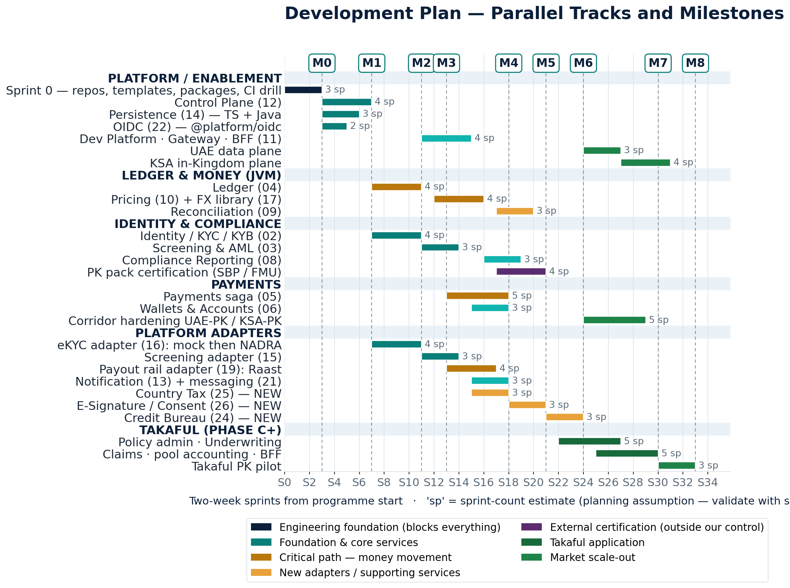
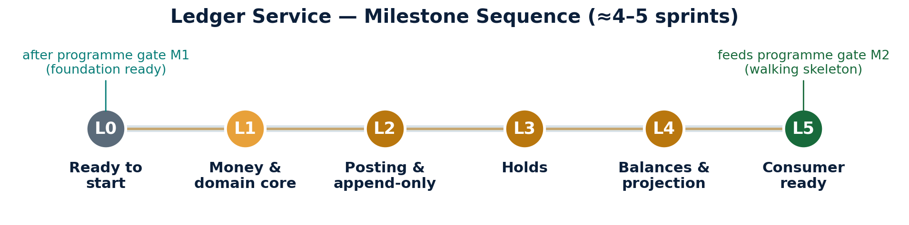

Each milestone has a demonstrable exit criterion \u2014 not a date. M0 and M1 are foundation; M5 is the first real tenant; M8 is all three markets live.
Sequential where the dependency graph forces it; parallel everywhere else. Full detail \u2014 squads, streams and exit criteria \u2014 is in Document 29.
| Phase | Focus | Duration | Detail | Gate |
|---|
Open Document 29 \u2014 full plan with squads and risks \u2197

Pakistan go-live (M5) lands around sprint 21 \u2014 roughly ten months at a two-week cadence. The Platform Adapters and Identity tracks stay close to continuously busy; the JVM track has deliberate gaps that absorb critical-path pressure.
Open Document 29 \u2197
The Ledger \u2014 on the critical path \u2014 gets its own six-milestone sequence between programme gates M1 and M2: money & domain core with no database at all, then persistence, holds, balances, and finally consumer-readiness.